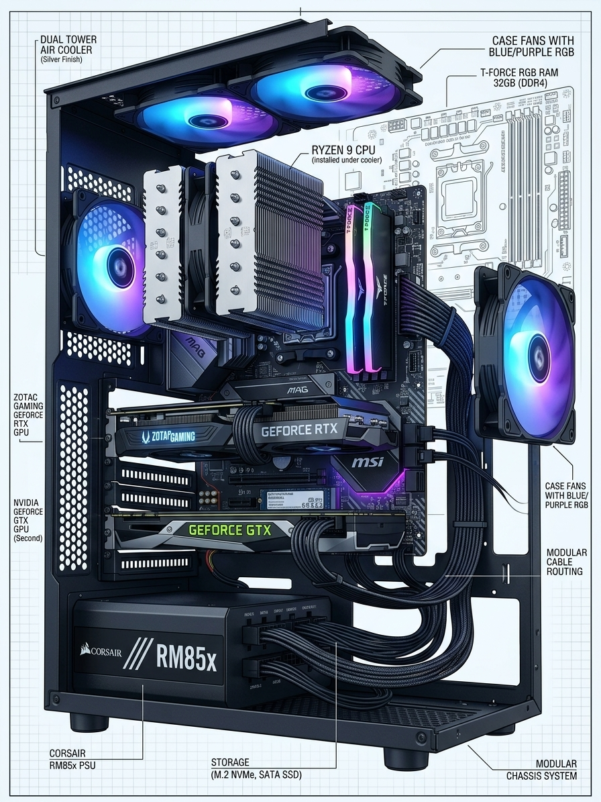

Software Systems is a course that focuses on the principles and practices of software development, including software design, implementation, testing, and maintenance. In this class, we learn about various software development methodologies, programming languages, and tools used in the industry. The course also emphasizes teamwork, problem-solving, and critical thinking skills necessary for successful software development projects.
We learn how to develop software systems that are reliable, efficient, and maintainable. We gain hands-on experience designing and implementing software solutions, and learn the importance of documentation, version control, and collaboration. We also explore tools used in software development, including integrated development environments (IDEs), version control systems such as GitHub, and testing frameworks.
We have also studied computer components and how they work together to create a functional system. We learned about system and application software, programming languages, and the software development life cycle (SDLC), from gathering requirements through deployment and maintenance.

AI-generated image created with Gemini, based on my computer's components.